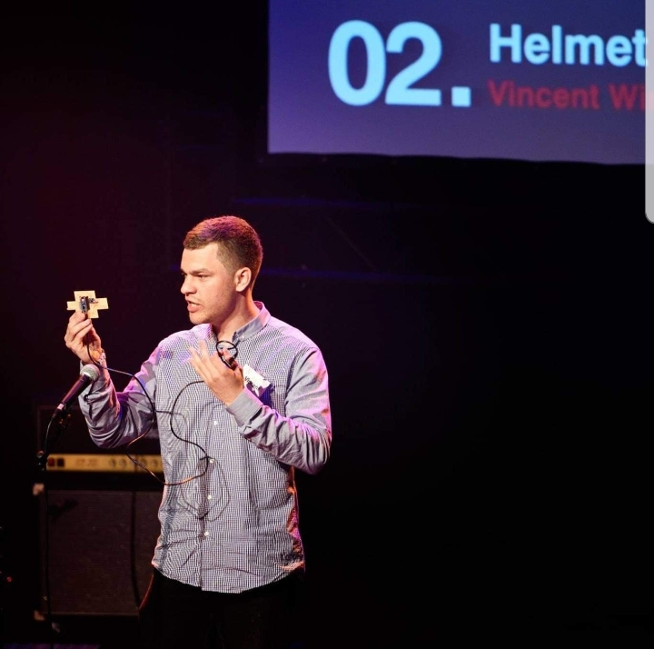

What is the Helmet Add-On:
The Helmet Add-On was my design for the 2015 Brains Awards competition. This is an international engineering competition held in Netherlands. I had orginally entered the competition as a joke submitting my papers about a week before the deadline. And much to my suprise I heard that they had accepted my papers and I was a top 20 finalist. I was expected to present my idea about a month or two later. It should be noted this would also be the first time I was expected to present infront of an actual audience and a fairly large one at that.
So what exactly is it and where did the idea orginate from. The Helmet Add-On was designed to attach to the back of bicycle/motorcycle helmets to increase visibility to the traffic around them by mounting a brakelight/blinkers at a higher level making it more visible to drivers and fellow cyclists. (This is also including the fact that bicycles don’t have a brakelight/blinker system) The idea came to me as I was cycling home one day in the dark, sure I had lights on my bicycle but there were no road lights, such is life on the country side, and I thought to myself how would a car behind me see if I’m about to make a turn.
The desing used a GY-521 Accelerometer/gyroscopic sensor to measure acceleration and change in angle. The idea was that a person could tilt their head left or right depending on direction they wanted to turn. This would activate the blinkers in that direction. It would also measure braking force and activate brake lights if a cyclist was coming to a hard stop.
The brains, pun fully intended, for this project was an Arduino Nano (or atleast a cheap clone) it is a common piece of hardware I use for a vast majority of my projects because of the low cost and wide support available for it. The remainder are some resistors and LED’s to showcase the functions.
I ended up building a rough PCB design and using some limited coding skills to build the code and prototype. Due to the short time frame I used a power bank to be able to power up and present my design during the presentations.
What is something I would change:
Sadly my old laptop that housed all the schematics, PCB design and simulations decided that the right temperature for the CPU was 90 degrees Celcius and died along with all the materials for this project. An old prototype is still lying around somewhere, but it is unlikely to be in one piece as I probably scavenged the sensor and Nano for other projects. I would revisit this project and flesh it out more if I find the time. With that being said here is how I would move forward with it if I did go this route again.
With the knowledge and skills I have gathered since that day I would go back and use an ESP32 and use BLE to communciate between a blinker system on the handlebars and the helmet rather than tilting your head to activate the blinkers. The same would hold true for the brakelight system, where I would use a pressure pad/switch to see if the brake was being activated. I would also build an actual power supply circuit and have additional consederations about weight and crash safety, neither of these things were a concern at the time. I would still use the same GY-521 sensor as it performed flawlessly for what was expected of it.
Closing notes:
The project taught me a lot about rapid prototyping, having to etch my own PCB was a benefit here because I was able to make rapid changes and not worry about having to wait on shipping of parts. It taught me a lot about making BOM’s aswell as making clear notes about version upgrades so I could go back and check the different revisions of both code and hardware to see why I had made changes. Overall it was a great experience and it got me comfortable presenting to a large audience.

-The-Lifting-Engineer